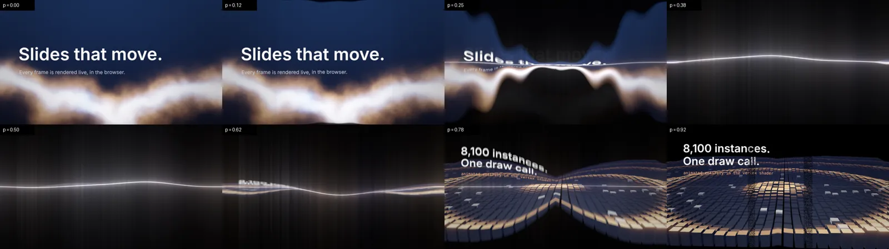
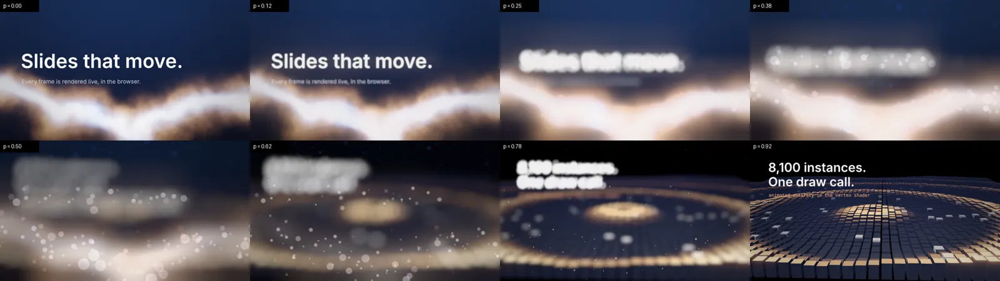
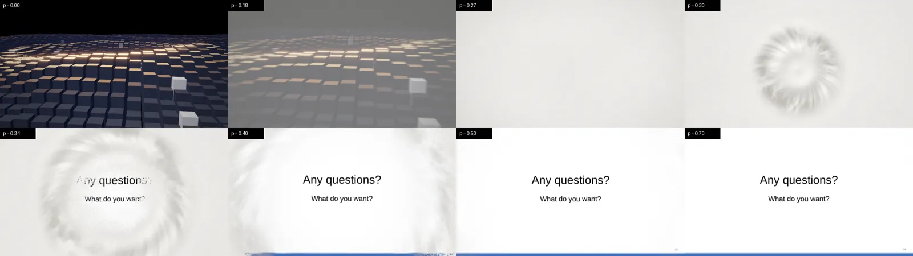
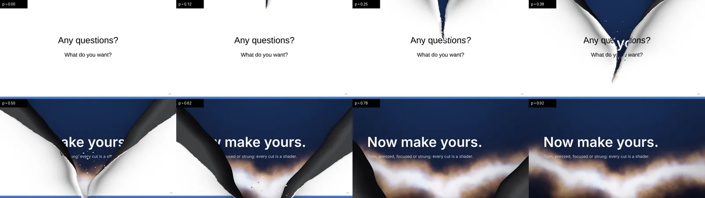

From the debrief of The Last Boring Slide (made by Claude, prompted by Nikita, @fluxxrider), written by another Claude session for Dinis Cruz and published here at his request. Punctuation follows this site's house style (no dashes as separators); nothing else is changed. Original Markdown.
10: Transitions deep dive (with working code)
The four signature transitions of the original deck are rebuilt in starter/src/transitions/
(line.js, daybreak.js, slam.js, tear.js). They are re-implementations written for this
debrief, not copies of the original's code: the same techniques, timing structure and phase layout, verified
by rendering. Reference renders are in starter/shots/sheet_*.png (8 frames along each timeline)
and starter/videos/*.mp4 (with synthesised sound).
python3 tools/transsheet.py line slam # contact sheets
python3 tools/video.py line daybreak slam tear # MP4 clips with sound
python3 tools/video.py reel # whole starter deck as a showreel
How every transition is built
export default {
dur: 2.8, // seconds; going back plays it reversed at 0.55× duration
create({ gfx }) { // once: build passes, meshes, targets
return { render({ A, B, p, out, time }) { … } };
},
};
A,Bhold this frame of the outgoing and incoming scenes (both keep animating during the cut).- Always early-out:
if (p <= 0) return gfx.copy(A, out); if (p >= 1) return gfx.copy(B, out); - Inputs are sRGB-encoded (the post stack's output). Convert with
toLin()before any blending/blur,toSrgb()on the way out. Blending in sRGB is the most common reason home-made transitions look muddy. - Most effects need a blurred or averaged version of a frame. Don't write separable blurs:
mipCopy(gfx)(intransitions/lib.js) makes a linear, mip-mapped copy;textureLod(tex, uv, lod)gives any blur radius, local averages (lod 6-9), and soft shadows from an alpha mask. - Design the timeline first, as a phase table (below), then write the shader. Every number in the shaders
maps to a row of the table. Give each phase its own
smoothstep(p0, p1, p)window, and overlap the windows. - Shape progress by hand.
tearusesS = mix(S, smootherstep(S), .55) + small sine wobbles, so it feels torn by a hand rather than tweened.slamuses a non-linear "seconds after impact" clock (tau) with decaying springs. - Every visual event has a sound event at the same fraction of
p. (See11-sound-design-guide.md.)
LINE, the picture collapses into a vibrating string

| p | What happens | How |
|---|---|---|
| 0.00-0.45 | A's columns squeeze toward a centre line, edges first | per-column height hA(x,p) = mix(1, .002, io5((p − .015 − .13·dist − .012·sin(40x))/.31)) |
| 0.10-0.86 | the line vibrates | y = .5 + amp(p)·sin(πx)·Σ three standing waves (modes 1, 2, 5), frequency ×1, ×1.9, ×3.1 |
| 0.16-0.95 | the thread glows | colour = this column's average colour (32 taps down a blurred mip), hue kept, brightness compressed; hot core + 3 exponential glow falloffs + a slow sweep |
| 0.44-0.60 | the thread's colour crossfades A→B | mix(colA, colB, smoothstep(.44,.60, p + .05·sin(9x))) |
| 0.52-1.00 | B unfolds from the thread, centre first | hB mirrored, with a little noise per column |
Key details that make it look right:
* Coverage AA: cov = clamp(min(y,1−y)·h·screenHeight + .5, 0, 1), the squashed sheet keeps perfectly sharp
edges even when it is one pixel tall.
* Energy conservation: as a column flattens, multiply it by 1 + 1.6(1−h)^6; the light "concentrates" into the line.
* Detail fades with height: sharp texture → blurred mip → column average as h drops (smoothstep(.25,.04,h)),
so a 3-pixel-tall image doesn't shimmer.
* Temporal motion blur: average 10 evaluations at p − .016·k, jittered per pixel. Without it the fast
collapse strobes.
* Phosphor afterglow: a faint, blurred copy of A lingers for the first third.
Tune: .13 (edge-first stagger), the three wave amplitudes .060/.034/.016, the wave speed t = p·15,
glow widths 80/15/4.2. For a vertical version, swap x/y.
DAYBREAK, defocus into bokeh, light floods, rack focus

| p | What happens | How |
|---|---|---|
| 0.03-0.50 | A defocuses | 40-tap golden-angle disc blur from a mip pyramid (LOD from radius), highlight weighting 1 + 16·l³, slight exposure lift, cat-eye (discs flatten toward the corners) |
| 0.04-0.70 | glow blooms from A's bright areas, peak ~0.34 | wide horizontal + diagonal samples at LOD 4.5-5.5 weighted by l²-l³, warm tint, slow fbm flicker |
| 0.10-0.92 | bokeh discs | 680 instanced quads on a jittered 34×20 grid; each reads A's colour at LOD 4.2 and is kept only where it's brighter than its surroundings (l − .62·l_far); they swell (radius ×~3), drift outward, then shrink to warm/cool star points |
| 0.24-0.64 | A's weight fades, its exposure drops to 0.55 | |
| 0.40-0.985 | B arrives defocused (radius .07, stronger highlights) and racks into focus | same blur at decreasing radius |
| 0.00-0.985 | soft-clip | c / (1 + max(maxRGB − .82, 0)), keeps the flood of light from clipping to flat white |
Key details: the disc fragment shader adds a brighter rim and faint onion rings (real lens bokeh);
disc alpha scales with 1/area^0.7 so small discs stay bright; discs are drawn additively into a half-res target.
Tune: max radius .085, highlight weights 16/22, disc keep threshold .03-.42, glow peak .95.
SLAM, a print block presses the next slide onto the screen

| p | What happens | How |
|---|---|---|
| 0.00-0.285 | approach: A is pushed (zoom 1 + .16k² + .62k⁴, 10-tap radial blur), air is squeezed out (rim darkens toward the centre), a blank sheet sweeps in with slight keystone and a shadow that tightens (exp(−dist·(14 − 6k))) |
k = p/.285 |
| 0.285 | IMPACT, the frame is all paper | sound: slam + boom on this exact frame |
| 0.285-0.86 | camera shake / roll / zoom spring decaying exp(−6.5τ); a ripple ring expanding .06 + 1.75(1 − e^−2.3τ) whose analytic derivative refracts B; the ink front spreads from the impact point, and paper tooth (fbm + two value noises) decides which pixels take ink first; wet ink is darker with a touch of relief (from B's luminance gradient) and dries; a dust ring blows outward |
τ = (p − .285)/.715 · 1.5 |
| 0.86-1.00 | settle into exactly B |
Key details: the paper colour is tinted toward A's average hue before contact (so the sheet looks lit by the
scene) and neutral after. The shake uses incommensurate frequencies (h, 1.27h, .9h) so it never looks periodic.
Tune: contact point .285 (move the sound with it!), shake amplitudes .0085/.016, ring speed 2.3,
front speed 2.6, τ scale 1.5 (bigger = faster print). Works best when B has strong ink (dark text on light),
like the deliberately plain slide it lands on in the original.
TEAR, the slide rips down the middle and both halves curl away

| p | What happens | How |
|---|---|---|
| 0.02-0.56 | the rip travels top → bottom | uYf = 1.08 − 2.4·S(p); everything above uYf is "open" (h = y − uYf) |
| 0.02-0.56 | opened paper starts to roll | width rolled w = .36·h^1.5; points with s = w − d > 0 wrap round a cylinder of radius R ≈ .21-.34: x = xc − sg·R·sin(s/R), z = R(1 − cos(s/R)); past half a turn they lie flat on the back |
| 0.37-0.995 | both halves roll out of frame | w += uW2, uW2 = (aspect + .98)·M^2.1·(1.35 − .35M) |
| throughout | the torn edge | position = slow wander slow(y) (3 sines) + fine fbm tearFine(y); white layered core along the lip, its width shared unevenly between the two halves (share = fbm(y)), what one half keeps, the other lacks; fibres sticking out (3 layers of hashed strands); the thin lip lets some of B's light through |
| throughout | back side & light | back is dark printed paper; front shaded by the roll normal (sg·sin φ, 0, cos φ); specular glint on the curl; self-shadow under the roll |
| 0.02-1.00 | 40 paper shards | instanced irregular polygons, born when the rip passes their height, tumbling on two axes, falling with gravity and drag |
| throughout | cast shadow on B | sheets rendered to a target; alpha copied into a mip chain; B darkened by two blurred, offset samples (near + far) |
Geometry: two grids of 120×96 quads, one per half (z attribute = side). All motion is in the vertex shader
(curl()); the fragment shader cuts the jagged edge per pixel (discard outside), so the edge detail is
independent of mesh resolution. Perspective is a cheap divide: gl_Position = vec4(x/aspect, y, 0, (3 − z)/3).
Tune: rip speed curve (S), roll radius, the .085 overlap margin (stops a seam showing before the rip arrives),
fibre lengths .030/.016/.009, shard count.
The other six (in the original)
| Name | Idea | How to build it |
|---|---|---|
fade |
crossfade | baseline |
portal-in / portal-out |
the slide becomes a quad inside the next 3D scene (or leaves one) | the scene exposes portal.in(s)/out(s) returning 4 NDC corners; draw the frame through a homography (4-point projective map, inverted 3×3) with analytic edge AA and mip blending. Used for the recap scene, where every slide becomes a sheet on an exponential curve |
fold |
the slide folds like paper, creases, plops into water | homography per fold panel + crease shading; crease/paper/plop sounds on each fold |
wash |
liquid wash across the frame | noise-displaced reveal mask + drips |
flaps |
split-flap board | many small instanced flaps flipping in a sweep; 100+ flap clicks in the sound |
iris (starter only) |
aperture opening with a glowing chromatic ring | transitions/iris.js, a good template for new ones |
Making your own: a checklist
- Pick a physical metaphor (paper, light, print, liquid, string, glass). Abstract wipes look cheap.
- Write the phase table with exact
pwindows; mark one hero moment (impact, snap, focus peak). - Prototype in one full-screen pass with
A,B,p; add geometry (instanced meshes) only if the metaphor needs depth (tear, fold, flaps). - Render a contact sheet at 8 values of
p, then a 30 fps clip. Look at both after every change. - Add the sound cue on the same timeline; put the hero hit on the hero frame.
- Check both directions: reversed playback must look good at 0.55× speed too.
- Check extremes: dark → light, light → dark, text-only frames, very busy frames.